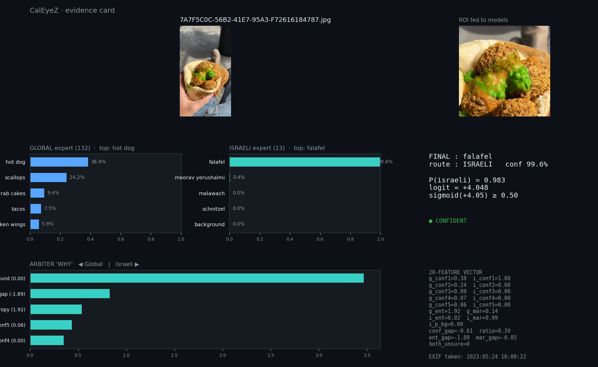
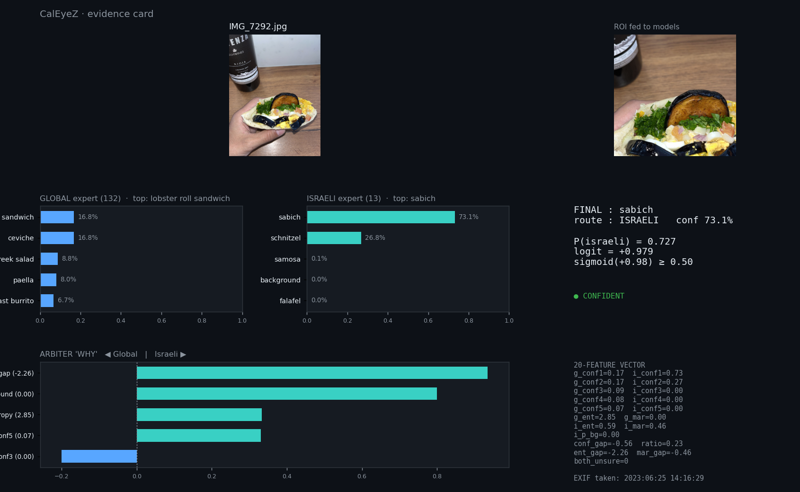
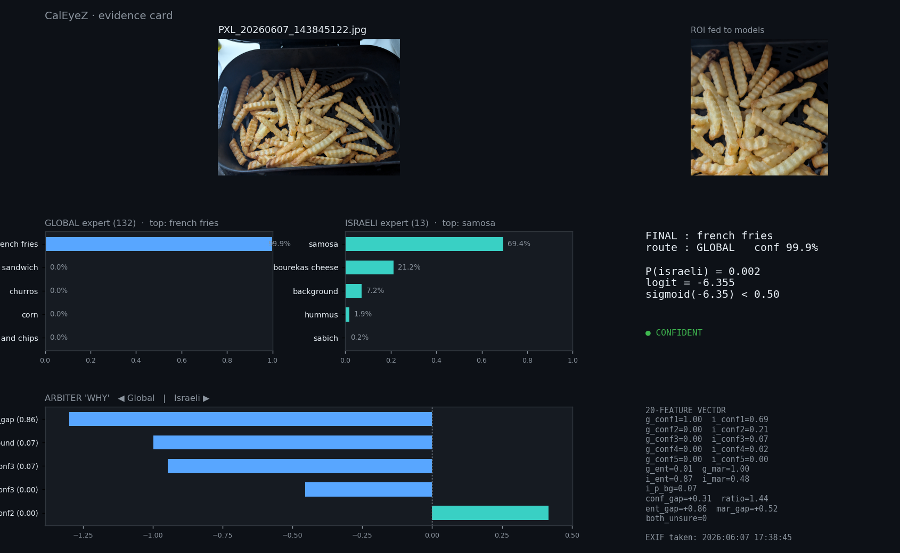

01 / Featured system
CalEyeZ
Food recognition becomes more useful when a camera prediction can meet a measurement from the physical world.
Computer vision + sensor fusion
From a photograph
to an accountable result.
Co-developed with Roi Tzur. A camera image goes through a 132-class global expert and a 13-class Israeli-food expert. An XGBoost arbiter selects the route. A BLE scale supplies mass, which the application combines with a food reference to estimate nutrition.
The work was not only training models. It included the capture flow, routing, scale integration, interface and independent checks against real photos.
86.2%Full routed-system top-1 on the documented held-out split
40 of 47Correct on a separate own-photo validation set

Vision path
CameraFood image
Global expert132 classes
Israeli expert13 classes
XGBoost arbiterRoute + food class
Measurement path
BLE scalePhysical sensor
Measured massWeight input
Vision result + mass
Food reference Recognized class selects nutrition values; measured mass scales the estimate
Nutrition estimateValidated against held-out and separate own-photo examples

